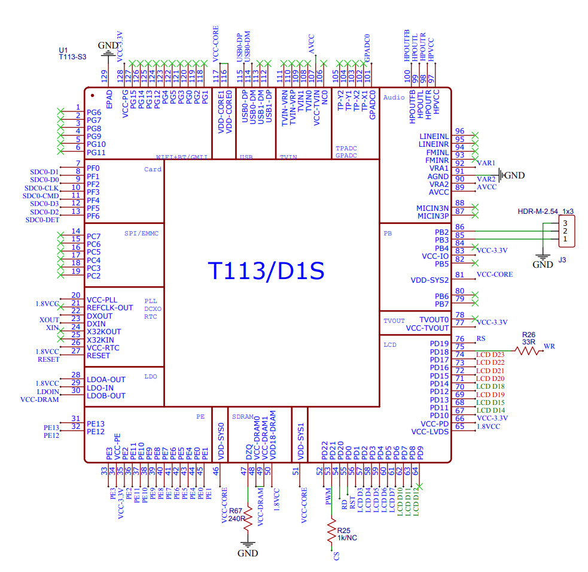
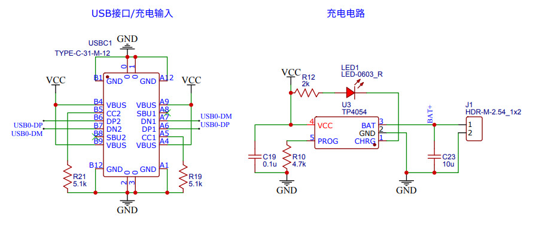
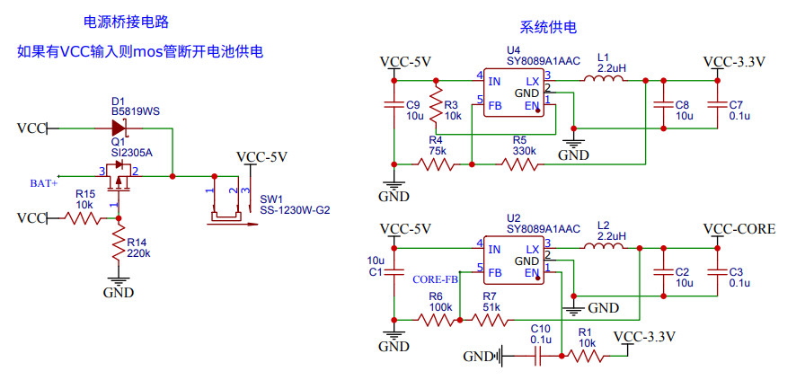
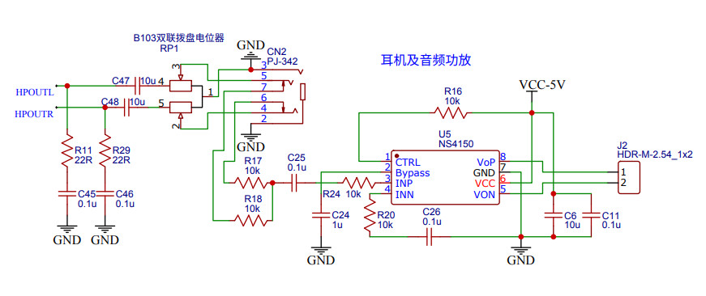
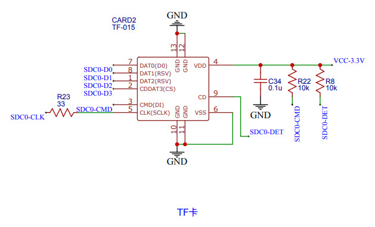
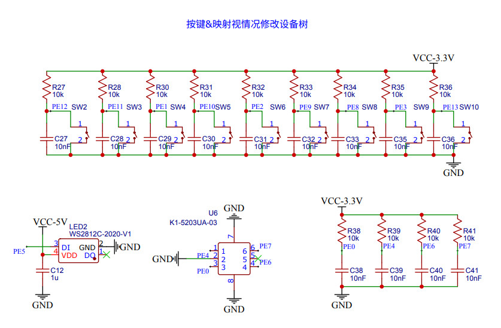
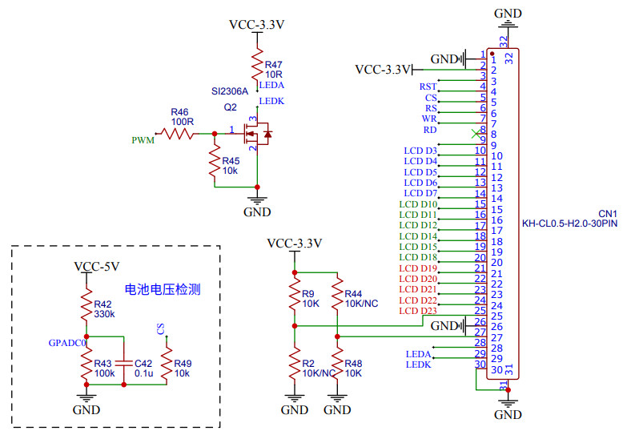

掌機 - Gaviar (小志掌機) - 電路改進
CPU電路

充電電路

供電電路

建議把CTRL拉到GPIO，方便用來控制雜音

MicroSD訊號沒有上拉電阻，因此，要注意PCB線長

GPIO都拉到獨立GPIO使用，避免鬼鍵問題，不過，可以使用晶片內部的提昇電阻，這樣可以減少電阻拉線

背光建議使用IC，避免壓降問題，屏使用RGB-565，建議找有TE(FRAME)的屏，這樣可以有效控制閃屏問題
